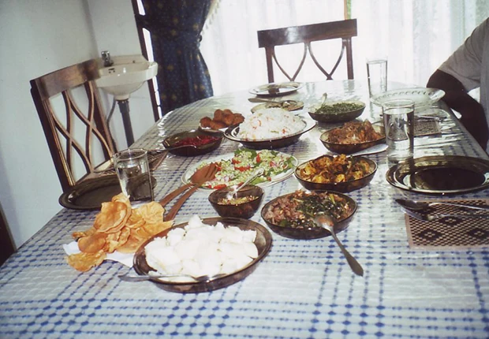

参加者レポート
斎藤碧さま スリランカ参加レポート
スリランカでの1日
| 6:00 |
起床。朝は、目覚ましなど掛けなくても、鳥の声で目が覚める。小鳥のさえずりというより、むしろジャングルの鳥の声に近い。 |
|---|---|
| 6:15 |
洗濯。たらいで洗う。コツは、何も考えずに黙々と洗うこと（笑） |
| 6:45 |
ベッティ。アンマ（ホストマザー）と一緒にモーニングティータイム。毎朝、外のテラスで、庭に集まってくる小鳥やリスを見ながらミルクティーを飲んだ。一日のうちで一番リラックスする時間。 |
| 7:30 |
朝食。スリランカカレー＆ストリングホッパー（String Hoppers。米粉を練って型に流し、そうめんの塊のようにして蒸したもの）＋フルーツ。 |
| 9:00 |
英語レッスン開始。個人の英語レッスン。家のリビングルームでレッスンをした。テキストや新聞を使ったりもしたが、ほとんどはディスカッションだった。 |
| 10:30 |
ティータイム。 |
| 13:00 |
午前レッスン終了。一応レッスンの時間は区切ってあったのだが、買い物をしながらや食事の準備をしながら自然と話の続きをしてしまうことも多々あった。 |
| 13:30 |
ランチ。スリランカカレー＆ライスを食べる。これらに加えて、オムレツやサラダを食べることもあった。 |
| 15:00 |
英語レッスン再開。ディスカッションの続き。英語で相手の知らないことを一から相手にわかるように説明する、という訓練を積むことができ、その結果英語能力（特に会話能力）が格段に向上したように思う。 |
| 17:00 |
レッスン終了。フリータイム。レッスンの宿題をしたり、犬と遊んだり。 |
| 18:30 |
夕食の買い物。ホストマザーと一緒に八百屋、魚屋などに行く。 |
| 20:30 |
夕食。スリランカカレー＆ライス。 |
| 22:00 |
シャワーを浴びる。シャワーを浴びたあとはできるだけ虫除けスプレーを使いたくないので、拠点を蚊帳の中に移す(笑）。蚊帳の中で日記をつける。 |
| 23:00 |
就寝。 |
食事について
食事は基本3食カレー。とは言っても、日本のカレーとは全く違う。

スープのようなものもあれば、煮物のようなものもある。一回の食事につき、2～3種類のカレーを食べる（トマトカレー＆豆のカレーなど）。
主食はその日によって違う。パン、ごはん、ロティ（Rotti。小麦粉とココナッツでつくる、硬いパンケーキのようなもの）等、他にもたくさんある。
食事は右手で食べる。最初のうちは慣れなかったが、慣れてくるとやめられない。考えてみれば、こんな合理的な食べ方はないではないか。魚の骨も簡単にとれるし、お米も一粒残らず食べられる、洗い物も少なく済む。
1ヶ月の滞在で体が完全にスリラン化してしまった私。日本に帰ってきてからもついつい手で食事をしてしまう、というのは秘密である。
裁判所訪問
8月20日にクルネーガラ（Kurunegala）にある裁判所を訪問。ホストファザーの妹さんがそこで事務員として働いており、特別に協力してくれたのだ。裁判傍聴、オフィス内見学の他、裁判官、弁護士、速記官、通訳の方等、たくさんの方にお会いして話を聞くことが出来た。
スリランカの法廷
スリランカでは、大きな法廷に一度に約10ケースの関係者が呼ばれ、1ケースずつ順番に訴訟を行っていく。したがって、傍聴席は、本来の傍聴席としての機能だけでなく、待機席としての機能も併せ持つことになる。裁判官は1ターム中ずっと変わらないが、弁護士は各ケースごとに異なり（彼らは自分の担当するケースの10分くらい前になるとドタバタと駆け込んでくる。そして、隣の弁護士とおしゃべりを始める。）、また訴訟が終わった人から帰って行くので、8つあるドアはどれも開けっ放しで、終始ザワザワしている。
問題点
スリランカの裁判は、利用者に不親切な裁判だと思った。もっと国民に利用しやすい制度に改めるべきである。証言台一つとってもそうだ。スリランカの証言台は、裁判官の目の前ではなく、どちらかと言うと裁判官の横に位置しており、傍聴席の方を向いている。そして、先程述べたように、法廷は大変広いので、ご親切にマイクがついている。「さらし者になりたくない」これが理由で泣き寝入りする人もたくさんいるそうだ。
特に、悲惨なのは、婦女暴行事件の訴訟などである。刑事裁判を行うmagistrate courtは、傍聴席の後ろの壁一面が細長い牢屋のようになっており、訴訟待ちの被告人たちが柵をガチャガチャゆすりながら見ている。そのような中で、答えたくないような質問をたくさんされても、恐怖と恥ずかしさでとても答えられないという。
また、言語の問題もある。法律家は皆英語ができる。しかし、時々それを悪用して、英語のできない当事者を無視し、英語で訴訟を進めてしまうことがある。シンハラ語しかわからない当事者は、弁護士からの英語の質問に、とりあえず「オウ（Yes）」と答えるしかない。そして、わけもわからないまま「とりあえず今日のところはここまで」となり、お金だけがどんどん吸い取られていくのだという。
裁判所を訪問して、スリランカの裁判の実態を目の当たりにし、どうにかしたいがどうにもできない、という歯がゆい思いで帰ってきたのは事実だ。
しかしたくさんのことを考えるきっかけになった、非常に有意義な経験となった。

スリランカでの1ヶ月を終えて
スリランカでの1ヶ月は、人生の中で、一番充実した1ヶ月になったと言っても過言ではない。当初の目的であった、英語力の向上及び発展途上国についての理解を深めることが達成できただけでなく、ホストファミリーとの絆を深められたこと、そして何よりスリランカという、今までほとんど何も知らなかった国をこんなに好きになれたことには自分でも本当に驚いている。
毎日たくさんのことを見て、聞いて、考えた。毎日綴った「スリランカ日記」はノート丸2冊に及んだ。ただ、一番の思い出は何かと聞かれると、ホストファミリーとの日常生活、というのが正直なところである。
特にアンマ（ホストマザー）は英語の先生でもあったので、彼女とは朝から晩まで一緒に生活をしていた。したがって彼女との思い出は格別である。掃除も、食事の支度も、一緒にした。他愛のないことをたくさん話し、たくさん笑った。「もう完全に私たちの娘ね。」と言ってもらえてすごく嬉しかった。
先日、そのアンマから手紙が届いた。「Our dear Japanese daughter, Midori」と題されたその手紙の最後には、こう書かれていた。「You are my 21st Japanese student and it is only you to whom I write a letter addressing daughter.」20年間生きてきて、手紙を読んで泣いたのは、初めてだった。
このスリランカでの1ヶ月をカルマと呼ぶのなら、前世の私はよほど良いことをしたに違いない。